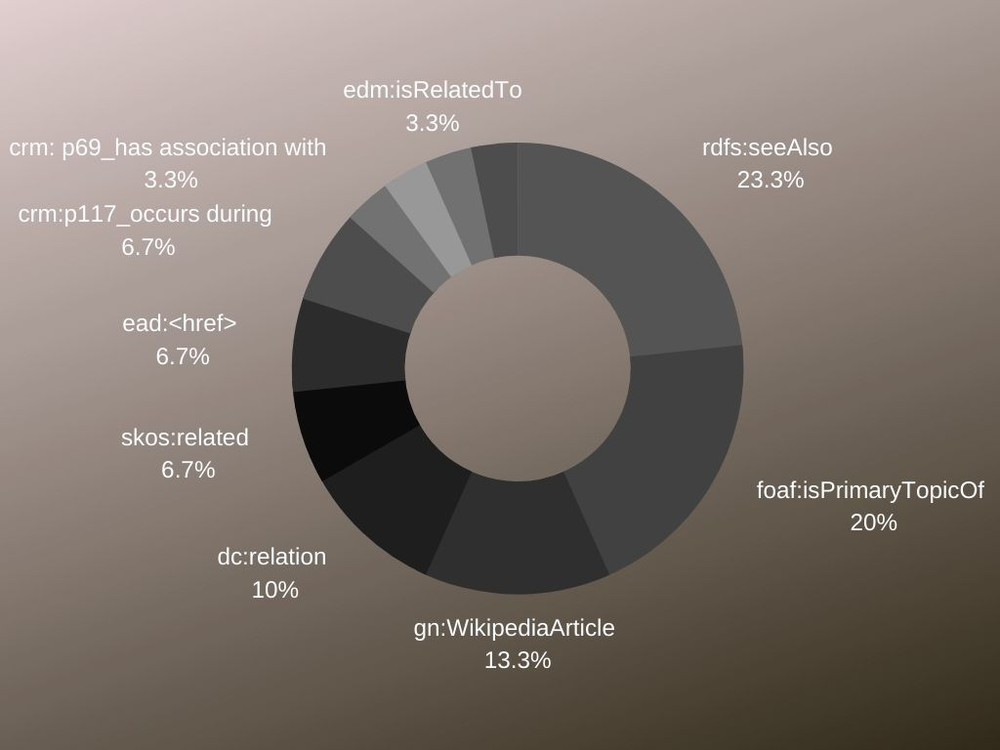

Expressing interconnections and links between data was conducted by applying properties from various vocabularies. As the chart shows, rdfs:seeAlso and foaf:PrimaryTopicOf were the most common ones as they are suitable for connecting concepts and people. For example, in the case of the letters attributed to Jack the Ripper, we have included only one of them (Dear Boss) in the collection of items. However, the data description enabled us to connect this letter with the other two letter written by Jack the Ripper (Dear Boss, From Hell, Saucy Jack).
Apart from these two predicates, gn:WikipediaArticle and dc:relation have been used to most. The latter can express a wide variety of connections, therefore it is suitable for most types of data connections. On the other hand, the former is quite specific, connecting a concept, person, date or place with its Wikipedia page. This also provides a sort of meta-level connection since Wikipedia articles are rich sources of related materials.
Cidoc-crm’s occurs during predicate provides an interesting perspective as we can use it to connect events and time-periods that took place simultaneously.
Similarly, Cidoc-crm’s has association with predicate was useful to connect people, concepts and events that are related, even if not in very obvious ways. A good example would be the movie entitled "From Hell" which is loosely based on a graphic novel with the same title which was inspired by the letter with the same title written by Jack the Ripper.
Lastly, skos:related and edm:isRelatedTo were used less often but as we can easily align them with DCMI’s relation, these three predicates that express fairly general concepts and can be used interchangeably.

Semantic information helps computers understand what we put on the web. RDF stands for "Resource Description Framework."
What is RDF exactly?
RDF is a standard model for data interchange on the Web. RDF has features that facilitate data merging even if the underlying schemas differ. It specifically supports the evolution of schemas over time without requiring all the data consumers to be changed.
RDF extends the linking structure of the Web to use URIs to name the relationship between things. It can describe any concept or thing that exists in the universe. The idea behind RDF is simple and it thus very easy. There are 3 things in RDF:
SUBJECTS refer to the thing that we are describing
PREDICATES refer to an attribute of the thing that we are describing
OBJECTS is the thing that we are referring to with the predicate(W3schools).
A Turtle document is a textual representation of an RDF graph (W3schools). A graph is made up of triples consisting of a subject, predicate, and an object. So the simplest triple statement is a sequence of (subject, predicate, object) terms, separated by whitespace and terminated by '.' after each triple (W3schools).
Click here to view the RAW file.
@base <http://jacktheripper-1888.github.io/>.
@prefix crm: <http://www.cidoc-crm.org/cidoc-crm/>.
@prefix dbc: <hthttp://dbpedia.org/resource/Category/>.
@prefix dbr: <http://dbpedia.org/resource/>.
@prefix dc: <http://purl.org/dc/terms/>.
@prefix dc: <http://purl.org/dc/terms/creator/>.
@prefix ead: <http://www.loc.gov/ead/>.
@prefix edm: <https://www.europeana.eu/en/>.
@prefix foaf: <http://xmlns.com/foaf/0.1/>.
@prefix owl: <http://www.w3.org/2002/07/owl#>.
@prefix rdf: <http://www.w3.org/1999/02/22-rdf-syntax-ns#>.
@prefix rdfs: <http://www.w3.org/2000/01/rdf-schema#>.
@prefix skos: <http://www.w3.org/2008/05/skos#>.
@prefix xsd: <http://www.w3.org/2001/XMLSchema#>.
@prefix wn: <http://www.w3.org/2006/03/wn/wn20/schema/>.
@prefix gn: <http://www.geonames.org/>.
@prefix dc: <http://purl.org/dc/elements/1.1/publisher>.
<production/Statue>
rdf:type crm:E12_Production;
crm:entity "artwork";
gn:name "London,England";
dc:title "Tomb of Jack the Ripper";
gn:name "Sweden";
edm:provider "Swedish Open Cultural Heritage";
dc:creator "Marcel Marien";
dc:identifier "http://kulturarvsdata.se/GSM/objekt/292791";
dc:isPartOf "http://kulturarvsdata.se/GSM/samling/7";
ead:date "1976";
ead:year "2002".
<object/Statue>
rdf:type "painting";
dc:medium "Paper";
crm:entity "artwork";
dc:title "Tomb of Jack the Ripper";
ead:genreform "Surrealism";
rdfs:seeAlso "https://en.wikipedia.org/wiki/Surrealism";
dc:publisher "Goteborgs stadsmuseum".
<person/marcel_marien>
rdf:type foaf:Person;
owl:sameAs dbr:Marcel_Marien;
dc:creator "Montelius Olle";
gn:wikipediaArticle "https://en.wikipedia.org/wiki/Marcel_Mari%C3%Abn".
<concept/jack_the_ripper>
owl:Class crm:E73_Information_Object;
crm:P15_was_influenced_by "Whitechapel Murders";
rdfs:subClassOf skos:Concept;
skos:related "populer culture";
dc:date "1888";
rdf:label "Jack the Ripper";
rdfs:comment "Artwork created by Belgian Surrealist artist, Marcel Marien in 1976, inspired by the Jack the Ripper murders.";
dc:creator "Marcel Marien";
foaf:isPrimaryTopicOf "https://www.tate.org.uk/art/artworks/marien-the-tomb-of-jack-the-ripper-t12048";
gn:wikipediaArticle "https://en.wikipedia.org/wiki/Marcel_Mari%C3%Abn".


 >
>
 >
>